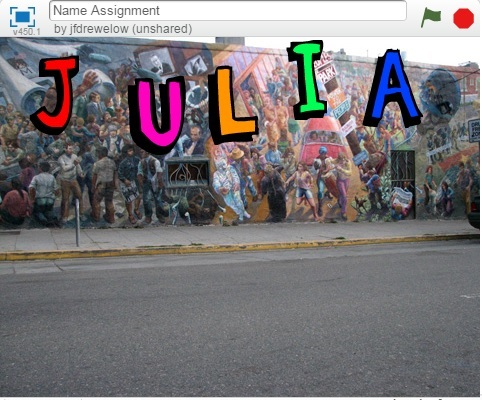

Scratch Content
Name Assignment

Description
I used scratch to design and create a program that shows my name. The requirements were to add a sprite for each letter in my name and then give them 3 unique behaviors. The program needed to run when the green flag was clicked and for extra credit I added a function to reset the scene to the beginning each time the green flag was clicked.
Concepts Learned:
- Using event blocks - green flag clicked, when key pressed, when sprite clicked
- Conditional statements - used if statements
- Used loops - I used a forever block to keep the sprite constantly moving
- Sprites - I created my own sprites using the sprite editor, I used the library of sprites to find letters in my name and adjusted the color
- Movement - I used the x and y values to make my sprites move to their original location when the green flag was clicked, I also rotated the sprites
Computer Buying Project

Description
I used scratch, my own knowledge and some research to pick an appropriate computer for the person we interviewed. The requirements were to pick someone to interview then create a scratch slideshow that appropriately described and picked the best computer for that person. We had to follow a rubric and make sure that all appropriate information was included. My group also had to present in front of the class. A citation needed to be included.
Concepts Learned:
- How to conduct proper research - We had to create a citation with adequate sources
- How to create a slide show in scratch
- Using event blocks - green flag clicked, when key pressed, when sprite clicked
- Inserting pictures from the web
Final Project

Description
In the final project I created a game from all the skills I learned, and all of my prior knowledge. We needed to closely follow the guidelines and mkae sure we had everything checked off on the rubric. The game needed to have at least 2 levels, and it needed to tell you when you won or lost. You needed to include instructions for the person playing the game.
Concepts Learned
- Using event blocks - green flag clicked, when key pressed, when sprite clicked
- Conditional satements - used if statements
- Used loops - I used a forever block to keep the sprite constantly moving
- Sprites - I selected a sprite and edited the size and color
- Movement - I used the x and y values to make my sprites move to random spots on the screen